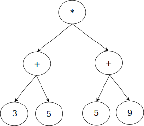
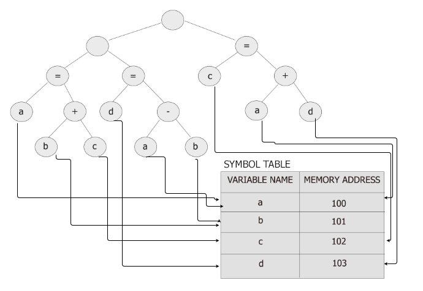

Introduction
The compilation of an ExpL program involves two phases. In the first phase (called the analysis phase), the source ExpL program is analyzed (lexical, syntax and semantic analysis are completed in this phase) and if the program is free of syntax and semantic errors, an intermediate representation of the source program called the abstract syntax tree is generated.
This is followed by a second phase, the second phase (called the synthesis phase) recursively traverses the abstract syntax tree and generates target code.
[Note : In the case of an interpreter, the second phase (called the execution phase) involves direct execution of the program by recursive evaluation of the abstract syntax tree.]
[Note: the abstract syntax tree representation is only one among several intermediate representations used in practical compilers. “Lower level” intermediete representations like three address code are often more useful for applying code optimization algorithms. In our present experiment, we do not perform any code optimizations and hence the code generation phase will directly work with the abstract syntax tree.]
There are four basic data structures that are maintained during the analysis phase. These are the following:
- The Type table is used to store information regarding the primitive and user-defined types in the program.
- The global symbol table is used to store information about the global variables and functions in the program.
- For each function, a separate local symbol table is maintained to store the information about local variables and arguements of the function.
- Finally, the abstract syntax tree is constructed as the outcome of the analysis phase.
An abstract syntax tree is a tree representation of a program. It is a generalization of the tree representation for expressions (called the expression tree). For example, the arithmetic expression (3+5)*(5+9) is typically represented as an expression tree as below:

We can generalize this representation to come up with a tree representation for the whole sequence of statements of a ExpL function in a program. Each funcion in an ExpL program will be represented by an abstract syntax tree. Thus, the whole program will be a collection of abstract syntax trees, one for each function.
As a very simple example, consider the three program statements:
a = b+c;
d = a-b;
c = a+d;
A syntax tree representation for the three statements above would look as below:

Note: The memory addresses assigned to each variable in the figure above (100-103) has been chosen arbitrary. The Application Binary Interface specifies the valid range of addresses that a compiler can allocate for variables. For instance, the ExpOS ABI requires that addresses must be in the range 4096 to 5119.Whenever a variable occurs in the syntax tree representation, it is convenient to maintain a pointer to the symbol table entry of the variable as shown in the figure. Note that since there are multiple symbol tables (global and local), the reference maintained for each variable must be to the right symbol table containing the variable entry.
In the following, the definitions node structures for each of the above data structures is discussed. The organization of data in these data structures is also discussed with illustrative examples.